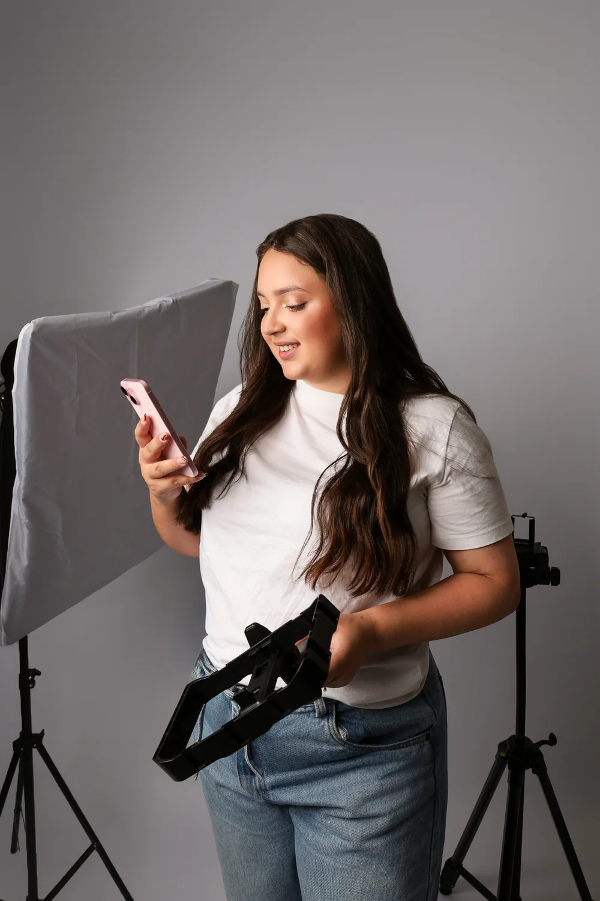
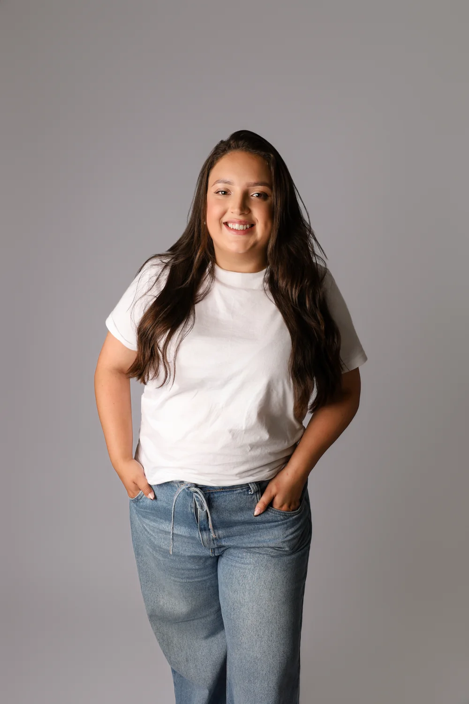

01
✳
Eventos especiais
Aniversários, casamentos e comemorações de todos os tipos.
- Decoração, convidados e bastidores
- Vídeo do parabéns e melhores momentos
- Fotos e vídeos durante o evento

SOCIAL MEDIA ✦ STORYMAKER
Transformo momentos especiais em fotos e vídeos espontâneos, modernos e autênticos — feitos diretamente pelo celular, com carinho em cada detalhe e prontos para as redes sociais.


DO PRIMEIRO CLIQUE AO ÚLTIMO BRINDE
POR TRÁS DA CÂMERA
A pessoa por trás dos registros — e apaixonada por transformar momentos em lembranças.
Sou Cassia Guimarães, Social Media e Storymaker. Meu trabalho é acompanhar de perto cada detalhe e registrar aquilo que faz cada ocasião ser única: os sorrisos, os abraços, a decoração, os bastidores e os momentos que merecem ser revividos.
Crio fotos e vídeos com uma linguagem leve, atual e espontânea, pensados para você compartilhar e guardar. Porque não é só sobre mostrar como foi — é sobre sentir tudo de novo quando assistir.
O QUE POSSO REGISTRAR
Do planejamento ao último registro, cada entrega é pensada para valorizar o seu momento.
Aniversários, casamentos e comemorações de todos os tipos.
Registros pelo celular, com qualidade e linguagem feita para as redes.
Um registro especial para celebrar fases e histórias.
Materiais personalizados para comunicar e convidar com criatividade.
ESCOLHA A EXPERIÊNCIA
Opções de cobertura para eventos e ensaios fotográficos.
Tem uma ideia diferente? Vamos conversar! Os detalhes do seu evento ou ensaio podem ser alinhados diretamente no atendimento.
ENTRE IDEIAS E HISTÓRIAS
Cada momento tem uma história. Meu olhar é dedicado a registrar os detalhes e transformar instantes especiais em memórias que merecem ser revividas.
Veja mais no Instagram ↗UM POUCO DO QUE JÁ REGISTREI
Fotografias e vídeos reais de momentos especiais, registrados com leveza e autenticidade.
8 registros
FACILIDADE PARA VOCÊ
SEU MOMENTO MERECE ESSE CUIDADO
Me conte o que você está planejando. Vai ser um prazer pensar nos registros junto com você.
Chamar no WhatsApp ↗